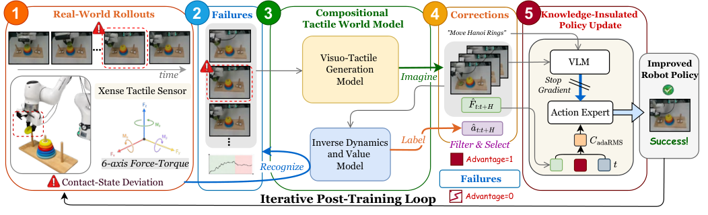

TACO
用触觉世界模型在失败点附近想象修正段，再把它当训练数据喂回策略。
TACO: TActile World Model as a Self-COrrector for Scalable Robot Policy Post-Training
六任务各 40 回合：基础 π₀.₅ 平均任务分 0.375，经两轮后训练到 0.825，同期最强基线 DreamGen 0.550（表 I）。
01这篇要解决什么？
接触失败在 RGB 上几乎看不出来：擦不掉的板、拧不开的盖，画面里都像做对了。人工补修正演示要有人守着一次次接管，做到六个任务就做不下去。这篇要回答的是在哪里找失败、修正数据从哪来，以及怎么让触觉监督不把预训练的视觉语言表示改坏。
02先看一个场景
机械臂拿着橡皮擦覆盖住白板上的星形，却始终没压出足够的力，星形一直在。另一段回合里它拧瓶盖，指尖贴住盖面却一直打滑，扭矩没传上去。这两段的前视画面几乎和成功回合一样，靠人守在旁边一次次接管来补修正数据，六个任务铺开就撑不住。
03方法怎样运转？

- 01
先把底座说清楚：哪些是现成的
所有方法共用一个起点：公开的 π₀.₅-DROID 检查点，PaliGemma 2B 主干加 300M 动作专家，在每任务 50 条演示上微调。视触生成模型从 Wan2.2-TI2V-5B 起步，先在 DROID、AgiBot、RoboMIND 与闭源数据上续训，再全参微调。
- 02
Recognize：靠带符号进度找失败点
逆动力学与价值模型由作者训练，视觉侧是 DINOv2-with-Registers 加方向感知解码器，触觉侧是 MLP 吃 12 维力矩。进度标签由人工标注的子任务关键帧线性插值而来，失败回合从失败起点往后取负。只在失败回合里找锚点，条件是短窗内进度增量低于阈值，末端状态排除。
- 03
Imagine：一个锚点生成 32 段视触修正
生成模型以锚点帧、当时的力矩读数和任务文本为条件，联合去噪出 49 帧视频与同长度力矩序列。视频与力矩 token 拼在一起进 DiT 自注意力，用时间 RoPE 把每四个力矩 token 对到一个视频潜时刻，首帧力矩不加噪当锚。每个锚点用不同随机种子采 32 段。
- 04
Label 与两道过滤
同一个逆动力学与价值模型逐帧给想象段贴上动作与进度标签。过滤查两件事：按锚点构型重建的指令轨迹有没有连续逆运动学解且不越界，预测力矩的幅值与变化率在不在真实轨迹标定出的范围内。通过的按进度增益排序，最多留 8 段，标成正优势样本。
- 05
知识隔离后训练，以及循环怎么停
后训练冻住 VLM 主干，只更新触觉编码器、适配层与动作专家。演示与成功回合标正，失败回合以失败起点为界前正后负，留下的想象段标正；训练时以 0.1 概率把标签换成空，推理时用无分类器引导偏向正标签分布。循环固定跑两轮，每轮生成模型与价值模型一起更新，没有收敛判据。
policy = finetune(pi05_droid, demos_50) # 现成检查点，每任务 50 条演示
for k in range(2): # 固定两轮，没有收敛判据
rollouts = deploy(policy) # 执行期不判成败，跑完整回合
for tau in [t for t in rollouts if failed(t)]:
p = IDVM.progress(tau) # 带符号进度，失败起点之后取负
anchors = [t for t in tau if p[t + delta] - p[t] < eps]
for t in anchors:
segs = [Gen(I[t], F[t], lang) for _ in range(32)] # 49 帧视频 + 力矩
segs = [s for s in segs if ik_ok(s) and force_ok(s)]
keep = top8(segs, key=IDVM.gain) # 同一个模型既打标又排序
corr += label(keep, y=1)
policy = cfg_rl(freeze_vlm(policy), demos + rollouts + corr)
Gen, IDVM = update(Gen), update(IDVM) # 生成器与价值模型每轮一起变方法与结果的原文定位见本页引用。
04跟着这个场景走一遍
教学推演：回到上面的场景。第一步，先让当前策略在白板前跑完一整回合才谈修正，执行过程中没有任何模块会说力不够。第二步，逆动力学与价值模型沿这条回合逐帧估一个带符号进度分，橡皮擦贴上板面之后进度不再涨，短窗内的增量低于阈值，这一帧就被标成失败邻近状态；末端帧排除，成功回合不参与找锚。第三步，视触生成模型以这一帧的画面、当时的 12 维力矩和任务文本为条件，用 32 个不同种子各去噪出一段 49 帧视频加同长度力矩序列，画面里橡皮擦压下去、星形被擦掉，力矩曲线同时抬起来。第四步，同一个价值模型逐帧给这些想象段贴上动作与进度标签，接着过滤：按锚点构型重建的轨迹要有连续逆运动学解，预测力矩的幅值与变化率要落在真实轨迹标定的范围里，通过的按进度增益排序，最多留 8 段。第五步，这些段标成正优势样本并进训练集，冻住 VLM 主干、只更新触觉编码器与适配层和动作专家，推理时用无分类器引导偏向正标签；两轮之后停。要点明没做到什么：定位失败点、给修正动作、给价值排序都是同一个模型干的，它标错的地方过滤挡不住，因为过滤只查运动学与力矩范围；真正的外部检查只有回放通过率，而那只抽了每任务每设定 50 个候选。
05实验到底表现怎样？
六个真机接触任务：插花、擦白板、拧瓶盖、敲木琴、烤面包、移汉诺塔环。平台是 Franka Research 3，前视 RealSense D455 与两枚 Xense 力矩指尖，SpaceMouse 遥操作采 50 条演示。每任务 40 回合、初始物位随机，报任务分与仅在成功回合上平均的完成步数。
作者报告的实验结果 · v2
| 方法 · 表 I 六任务平均 | 任务分 TS | 完成步数 CS |
|---|---|---|
| 基础策略 π₀.₅（50 条演示微调） | 0.375 | 185.5 |
| RFT · 第 2 轮 | 0.425 | 164.5 |
| DreamGen · 第 2 轮 | 0.550 | 131.7 |
| TACO · 第 1 轮 | 0.650 | 131.2 |
| TACO · 第 2 轮 | 0.825 | 117.0 |
原始证据：方法三步：§III ↗ · 主结果：表 I ↗ · 消融：§IV-C ↗ · 训练配方：附录 B-C ↗
任务分带部分完成的分数，不是成功率，0.825 不能读成 82.5% 成功。完成步数只在成功回合上平均，成功回合少的时候这个数会偏乐观。另外基础策略在移汉诺塔环上只有 0.075，六任务平均被这一项压低，TACO 把它拉到 0.775，平均值的涨幅有相当一部分来自这一个任务。
06收益来自哪里，又停在哪里？
消融与机制证据
表 II 最有说服力：只生成视频时回放通过率 32.0%、策略任务分 0.275；联合生成视触后升到 86.0% 与 0.650；生成器不变、只给价值模型加触觉输入，动作损失从 0.038 减半到 0.019，回放通过率 98.0%。表 III 去掉知识隔离掉到 0.475，是所有消融里最狠的一项。
结论的适用边界
模型来源分两层。现成的：策略底座是公开的 π₀.₅-DROID 检查点，生成模型的底座是 Wan2.2-TI2V-5B，视觉特征用 DINOv2-with-Registers。作者训练的：生成模型的续训与全参微调、逆动力学与价值模型，以及每一轮的策略更新——而且生成模型与价值模型每轮都跟着更新，所以两轮之间变的不只是策略。人工成本没有消失，只是换了位置：进度标签来自人工标注的子任务关键帧，力矩合理范围按任务标定，回放通过率也靠人工复核。判据的自洽风险要点名：找失败点、给修正动作、给价值排序全由同一个价值模型做，判错就直接污染训练集，而过滤只查运动学与力矩范围，查不出动作合法但方向错的那类。回放通过率是唯一的外部检查，却只抽每任务每设定 50 个候选。规模上六个任务、每任务 40 回合，数据配比实验只覆盖两个任务。锚点窗长、进度阈值与增益阈值的取值，以及每轮采多少真实回合，论文没有给出。
07放回全书的脉络
与 RoboClaw 对照最有价值：都让同一个模型既判失败又供训练数据。ASPIRE 把修复沉淀成可复用知识，这篇沉淀成权重，出错后更难回溯。
08把阅读变成一个小研究
把价值模型的失败点定位人为打偏若干帧，其余全部不变，看两轮之后的任务分怎么变。
先自己回答：这项实验怎样才有解释力？
要同时记回放通过率与任务分。若定位打偏后过滤仍旧放行、任务分却下降，说明过滤只挡得住运动学错误，挡不住语义错误。
- 用自己的话说出这篇改变了哪个模块。
- 画出它的输入、输出和一次失败如何被处理。
- 复述一个结果，同时说清基线、指标与实验条件。这一问不给答案，材料在第 05 节。
先自己答，再看前两问的参考答案
这篇改了哪个模块改的是数据来源与后训练配方这一层。任务目标、成功判据、机器人平台与评测协议都不动，策略结构也不换，仍是那个 π₀.₅ 检查点。没有改的是执行期：策略部署时照样开环吐动作块，没有加在线的成功检测、重试或恢复。真正新增的是训练前的一条流水线——用带符号进度在失败回合里定位失败点，用视触联合生成在那个点上想象若干条局部修正，用同一个价值模型给这些想象段贴动作与进度标签，过滤排序后并进训练集；再配一套冻住 VLM 主干的后训练，让触觉监督不去改写预训练的视觉语言表示。
输入、输出与一次失败如何被处理要分两条通路看。训练侧的输入是当前策略跑出来的真实回合、原始演示，以及人工标注的子任务关键帧；输出是一份累积的修正数据集和更新后的策略权重。执行侧的输入是前视 RGB、两枚指尖的 12 维力矩与本体状态，输出是 30 步动作块，推理时用无分类器引导把速度场偏向正优势那一侧。失败怎么被处理，得说清它发生在哪一层：执行期没有任何失败通路，策略不判自己有没有做成，也不会在回合内重试；失败要等这一整回合跑完、进入下一轮修正循环才被看见。看见的方式是价值模型沿回合估一条带符号进度，在进度停滞或下降的那个短窗标出锚点，再在那里想象修正。换句话说，恢复不发生在机器人身上，而发生在下一次训练里；同一次失败在当轮无法挽回，而如果价值模型把失败点标错，错误会以正优势样本的形式进入训练集，运动学与力矩过滤查不出这种错。
用触觉世界模型在失败点附近想象修正段，再把它当训练数据喂回策略。
↗带着位置回到原文
首发日期用于时间排序；以下方法与结果对应 v2。数据为论文作者报告，本讲义没有独立复现实验。
QA就这一页提问或讨论
对某个数字、某条边界或某个推演有疑问，欢迎直接留言：讨论按页面分开，回复会保留在 XinrunXu/awesome-agentic-robotics-papers 的 Discussions 里，需要一个 GitHub 账号。